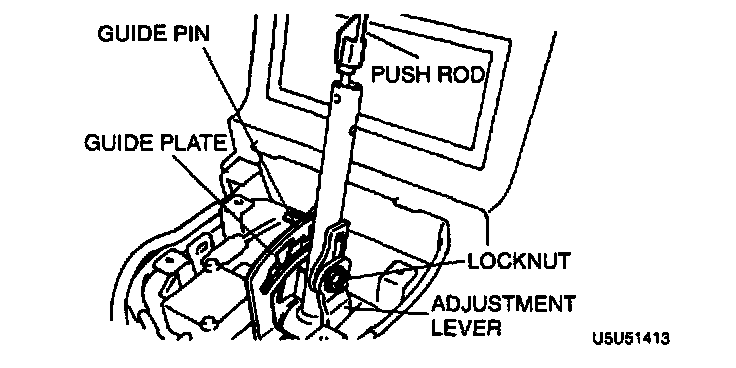
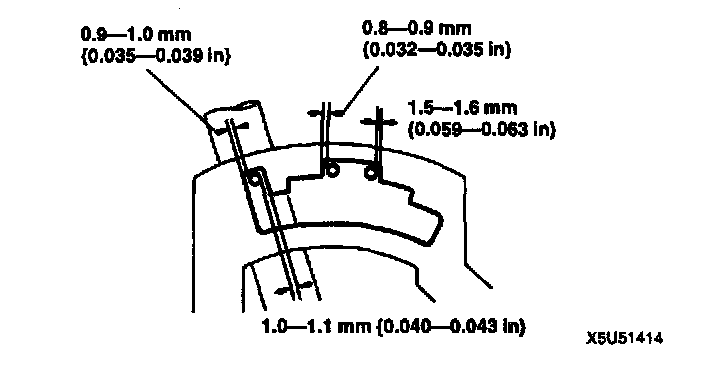

Selector Lever
SELECTOR LEVER ADJUSTMENTLever Position Adjustment
1. Remove the rear console, selector lever knob, selector sleeve, and indicator panel.

2. Loosen the locknut.
3. Shift the transmission to P position by pushing the adjustment lever forward.

4. Adjust the lever so that the clearance between the guide plate and the guide pin in P position with the push rod lightly depressed is as shown.
5. Tighten the locknut.
Tightening torque 19 - 28 Nm (2.0 - 2.9 kgf-m, 15 - 20 ft. lbs.)
6. Move the selector lever to N position and D range and verify that there is the same clearance between the guide plate and guide pin.
7. If not as specified, readjust the lever.
8. Install the indicator panel, selector sleeve, selector lever knob, and rear console in the reverse order of removal.